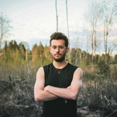

À propos de Maël Robin

Passion, folie, innovation et détermination. Je pense que cela résume assez bien ma manière d'être. Je ne suis pas né athlète, demi-fondeur ou coureur de 400 mètres haies improvisé. Je le suis devenu. Je suis devenu la personne que je voulais devenir. Je suis surtout en train de la devenir. Je me suis transformé en passionné d'athlétisme, demi-fondeur, lanceur de javelot de temps en temps et puis perchiste pour le plaisir. Tout est apparu très vite comme une évidence. Je me dois de redonner tout ce que le sport m'a offert. Sur les pistes depuis l'âge de 7 ans. Je n'ai jamais vraiment impressionné, quelques années de championnats de France de cross-country, de bike and run et de raid UNSS et puis plus grand-chose. Je pense que tout est une question de sens, je n'ai pas trouvé de sens à devenir très fort dans une discipline particulière. Je suis ainsi devenu un touche à tout, un explorateur. Mon but n'est plus tant de devenir exceptionnel quelque part mais surtout partout. Ainsi mon but, rechercher et réinventer. Un bel institut qu'est l'INSEP pour réussir cet objectif. J'ai déjà eu la chance de vivre de nombreux grands moments et j'ai une belle expérience dans beaucoup de domaines, j'espère que cette expérience ne sera bientôt plus grand-chose vis-à-vis de ce qui va suivre. J'aimerais citer Marshall Rosenberg : « On s'aperçoit qu'on a une vraie passion quand on accepte « l'enfer » que suppose son apprentissage avec une sorte de volupté. » Je veux devenir un chercheur de haut niveau à l'instar de nos sportifs, moi aussi je veux me dépasser et mériter mes médailles. La médaille ne sera pas la même, l'arrivée le sera. Je suis un peu fou mais très passionnée, déterminer à creuser pour l'innovation.
Services
- Statistiques,
- Mise en forme graphiques,
- Utilisation et analyse GPS,
- Développement.